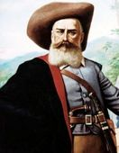

Sabe-se muito pouco sobre a vida de Zumbi. No entanto, a pesquisa histórica procura desembaraçar algumas informações a respeito da biografia dessa grande personalidade brasileira. As profundas lacunas a respeito da vida de Zumbi estão em torno de sua vida pessoal. A respeito de sua infância, o único relato existente é o do jornalista Décio Freitas.
Nesse relato, o jornalista afirma que Zumbi havia nascido livre em Palmares, e acredita-se que tenha sido capturado quando tinha por volta de sete anos e entregue como escravo a um padre chamado Antônio Melo. Uma vez escravizado, recebeu o nome de Francisco e aprendeu a falar português e latim. Aos 15 anos, teria fugido e retornado a Palmares, onde se tornou um importante comandante militar dos palmarinos.
Essa versão clássica da infância de Zumbi não é levada em consideração pelos historiadores e é tida como improvável, porque não existem evidências que a comprovem, além do próprio relato de Décio Freitas. Outra coisa que não se sabe é se Zumbi teve esposa e filhos, apesar de existir uma carta escrita pelo rei português D. Pedro II para Zumbi sugerindo que este os tinha.
Nessa carta, D. Pedro II oferece perdão a Zumbi pelas ações por ele realizadas contra colonos portugueses. O rei oferece o perdão, desde que Zumbi aceite ser seu súdito, e o faz por meio deste convite:
Eu El-Rei faço saber a vós Capitão Zumbi dos Palmares que hei por bem perdoar-vos de todos os excessos que haveis praticado […]. Convido-vos a assistir em qualquer estância que vos convier, com vossa mulher e vossos filhos e todos os vossos capitães, livres de qualquer cativeiro ou sujeição, como meus fiéis súditos, sob minha real proteção, do que fica ciente meu governador que vai para o governo dessa capitania para que o cumpra e guarde […].
De toda forma, sabemos que Zumbi nasceu de fato no Quilombo dos Palmares em 1655, e muitos dizem que ele teria sido sobrinho de Ganga Zumba, outro líder importante de Palmares. Apesar disso, existem alguns historiadores que apontam que a nomenclatura de Zumbi como sobrinho de Ganga Zumba pode ter sido apenas uma simbologia para remeter ao fato de que o primeiro era protegido do segundo.
Sabemos também que Zumbi era um general do Quilombo dos Palmares, e os relatos portugueses destacam a sua atuação na resistência dos palmarinos. São esses relatos que ajudaram a construir a imagem de Zumbi como um grande líder. Sabe-se também que o nome Zumbi pode derivar de nzumbi, termo africano que significa fantasma.
E na atuação de Zumbi como general que está uma das grandes polêmicas de sua vida: o desentendimento com Ganga Zumba. Em 1678, o líder de Palmares era Ganga Zumba, e, em meio a décadas de lutas, ele recebeu uma oferta de paz das autoridades coloniais. Nessa proposta, o governador da capitania concedia a liberdade para os nascidos em Palmares, mas todos que fossem fugidos deveriam retornar aos seus donos. Se o líder palmarino aceitasse a oferta, os nascidos em Palmares poderiam viver sua liberdade em Curuá como súditos da coroa portuguesa.
Ganga Zumba teria acertado essa oferta e aceitado mudar-se, mas Zumbi, indignado, teria defendido que a liberdade fosse uma conquista para todos. Assim, acredita-se que Zumbi, ou um de seus aliados, tenha assassinado Ganga Zumba, e especula-se que isso aconteceu por meio de envenenamento.
Depois da morte de Ganga Zumba, seguiu-se um conflito com Gana Zona (irmão de Zumba), e Zumbi declarou-se líder de Palmares. Conduziu a resistência palmarina nos anos seguintes até a capitulação final do quilombo, quando as tropas de Domingos Jorge Velho atacaram e destruíram Cerca Real do Macaco.

No século 17, os bandeirantes paulistas faziam expedições no nordeste para conquistar territórios indígenas que ainda não haviam sido tomados pelos colonizadores portugueses. Um dos bandeirantes que mais se destacou nessa função foi Domingos Jorge Velho, que ficou conhecido como um fervoroso caçador de índios.
Com sua fama cada vez maior, foi contratado por Francisco Garcia d’Ávilla, um grande proprietário de terras na Bahia, para exterminar os índios que estavam situados cerca do rio São Francisco. A intenção era acabar com os nativos e ocupar o espaço deixado por eles para criar uma estância de gado. Algo que agradava Jorge Velho — que possuía uma fazenda ao oeste de Pernambuco.
Por três longos anos, entre 1671 e 1674, ele lutou junto de Domingos Afonso Sertão contra indígenas do Piauí, Maranhão e Ceará. A dupla espalhava o horror em nome da hegemonia branca em solo brasileiro.
Apesar de ficar conhecido como o caçador de índios, ele não dedicava seu trabalho exclusivamente na perseguição desses povos. Em 1687, ele aceitou um pedido de João da Cunha Souto Maior, então governador de Pernambuco, para que ele se unisse com as suas tropas e dizimasse os escravos dissidentes que formavam o Quilombo de Palmares.
Depois de acertar os últimos detalhes do cruel contrato, ele partiu, em 1691, para atacar os quilombolas. O grupo de escravos até tentou resistir, mas o cruel algoz conseguiu sair vitorioso do confronto quatro anos depois, em 1695, com a morte de Zumbi dos Palmares. Acredita-se que mais de 15 mil quilombolas lutaram ao lado dos Palmares.
Em 1699, Jorge Velho recebeu outra missão sangrenta. Seguindo as ordens de Matias da Cunha, ex-governador geral do Brasil, partiu com missionários locais em busca da dominação e catequização de indígenas maranhenses, cearenses e pernambucanos.
Por seus feitos, Domingos Jorge Velho foi honrado como Mestre de Campo no governo de Estevão Ribeiro. Ele faleceu em 1705, aos 64 anos, na capitania de Paraíba. Até seus últimos dias de vida, ele ficou conhecido por servir os interesses dos grandes proprietários em detrimento de vidas de indígenas e escravos.
Domingos Jorge Velho destruiu o Quilombo dos Palmares em 1694 utilizando táticas de guerra de cerco, superioridade bélica e alianças com indígenas, após ser contratado pelo governo colonial. Comandando uma tropa de paulistas, ele sitiou a "Cerca do Macaco" (capital de Palmares), destruindo-a com artilharia pesada.
Morte de Zumbi dos Palmares
Depois da destruição de Cerca Real do Macaco, Zumbi fugiu. Durante muito tempo, acreditou-se que ele teria cometido suicídio durante esse ataque, mas foi comprovado por estudos feitos nas últimas décadas que ele fugiu. Nesse sentido, Zumbi viveu durante cerca de um ano e meio embrenhado no mato e sobrevivendo de pequenos ataques realizados por ele e seus companheiros sobreviventes.
Em 1695, ele teve seu esconderijo denunciado por um de seus companheiros, chamado Antônio Soares, que foi capturado e torturado. Zumbi então foi emboscado e morto. Ele teve sua mão cortada e sua cabeça decepada, salgada e levada para Recife, onde ficou em exposição em praça pública. A morte de Zumbi aconteceu no dia 20 de novembro de 1695.
Legado de Zumbi dos Palmares
A luta de Zumbi dos Palmares deixou um grande legado para a posteridade:
Sua luta serviu de inspiração para que o movimento negro se engajasse contra o racismo no Brasil.
A luta de Zumbi dos Palmares é utilizada para valorizar a cultura afro-brasileira.
Homenagens a Zumbi dos Palmares
No século XX, Zumbi tornou-se um grande símbolo de resistência em determinados grupos políticos. Essa apropriação de sua história fez com que o dia de sua morte fosse convertido em uma data comemorativa que relembra Zumbi dos Palmares e a luta contra a escravidão e o racismo no Brasil.
Essa data comemorativa é celebrada no Dia Nacional de Zumbi e da Consciência Negra, em 20 de novembro, o dia da morte de Zumbi dos Palmares. Atualmente, a data é considerada um feriado nacional, sendo uma data simbólica da luta contra o racismo no Brasil.
Quem foi Dandara dos Palmares?
Dandara dos Palmares é uma figura da história brasileira muito pouco conhecida e com pouquíssimas fontes a seu respeito. Ela viveu no Quilombo dos Palmares, o maior quilombo da história do Brasil, e ficou conhecida por ser uma mulher guerreira que se engajou na luta contra os portugueses que planejavam destruir o quilombo.
Foi esposa de Zumbi dos Palmares e teria sido uma grande influência na forma como ele administrava o quilombo. Juntos tiveram três filhos, chamados Motumbo, Harmódio e Aristogíton, mas não se sabe mais nada sobre a vida pessoal do casal. Em 24 de abril de 2019, Dandara dos Palmares foi incluída no Livro de Heróis e Heroínas da Pátria por seu papel em Palmares. Sua inclusão se deu por meio da lei nº 13.816.
O que sabemos sobre a vida de Dandara dos Palmares?
O conhecimento que temos sobre a vida de Dandara dos Palmares é bastante limitado porque praticamente não existe registro a seu respeito. As incertezas sobre sua biografia se iniciam com o seu nascimento, uma vez que não se sabe quando ela teria nascido e também se ela nasceu no Brasil ou na África.
Os estudos atuais acreditam que ela teria nascido no Brasil, sendo filha de uma africana escravizada, e que se juntou ao Quilombo dos Palmares ainda criança. As poucas informações disponíveis sobre a vida de Dandara apontam que ela se transformou em uma personalidade extremamente importante na vida do quilombo.
Ela era capoeirista; atuava na produção de alimentos dos palmaristas; e também saía para as caças, que ocorriam com frequência. Ela também foi uma importante guerreira, chegando a liderar tropas na luta contra os portugueses. Politicamente, teria sido uma figura importante.
Dandara teria rejeitado o acordo costurado por Ganga Zumba, líder do quilombo até 1678, não concordando com seus termos. Acredita-se ainda que ela tenha exercido forte influência para que Zumbi também os rejeitasse. No mesmo ano, Ganga Zumba foi assassinado, Zumbi tornou-se líder do quilombo, e o acordo não foi concretizado.
Morte de Dandara dos Palmares
A morte de Dandara teve relação com a destruição do Quilombo dos Palmares. Durante a liderança de Zumbi, os ataques portugueses se tornaram frequentes, e, nas batalhas que aconteceram, Dandara teria demonstrado sua habilidade com as armas e sua capacidade como estrategista militar. Supostamente, foi capturada pelos portugueses, e, para não ser mantida como cativa, suicidou-se em 6 de fevereiro de 1694.